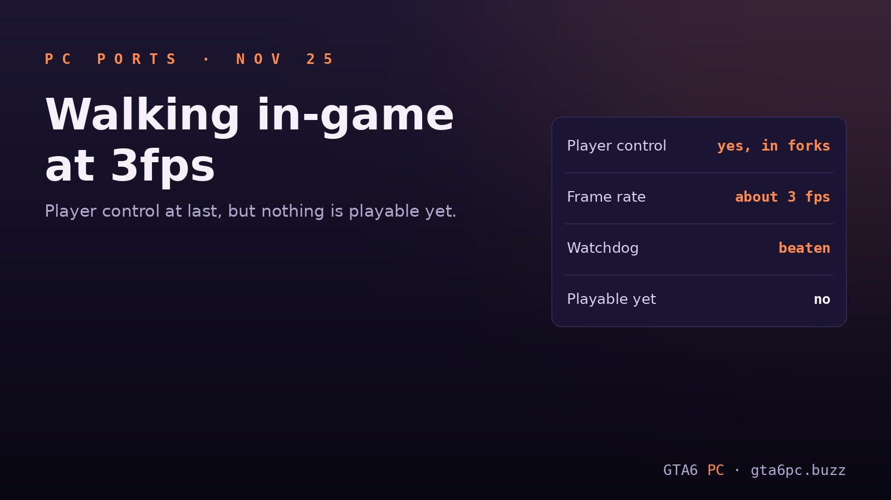

Who is winning the GTA 6 PC port race? Walking in-game now, at about 3fps
The race to run GTA 6 on PC has passed another milestone, and it happened the day after Leonida was shut down. Forks of the VIctory project now let a player walk around inside the game on a Windows PC, at about 3 frames per second, with every shadow black. It is not playable, it is barely watchable, and it is real: by Wednesday morning, 63 people had run the code on their own machines. Here is where each project stands on November 25.

Update, November 25: walking around in-game
A day after Leonida was shut down, the port race passed the milestone that mattered most: a player moving inside the game. On November 24, a fork of VIctory called victory-fork, published by a developer known as fxceless, let a player walk around inside GTA 6 on a Windows PC. The commit went up at 18:02 UTC, about 32,000 lines, tested on a single RTX 4070. Its own front page that evening said it plainly: not playable yet, about 3 frames per second, and shadowed areas are black. By Wednesday morning, 63 strangers had run the code on their own machines, with the first outside confirmation on an AMD card 76 minutes after the commit, and a movement report 34 minutes after that.
The numbers explain why 3 frames per second is both a breakthrough and a wall. One tester's log from an RTX 5060 Ti showed a single frame taking 390.6 milliseconds: 129.6 milliseconds preparing it, 187.3 on the graphics card, and 66.3 copying it back. A single run on an RTX 4090 reached 7.6 frames per second. DSOGaming, reporting the first in-game footage, calls the results mighty impressive for 48 hours of work, and stresses the game is not playable in any way: performance is all over the place, and there are still a lot of visual artifacts.
Other forks have gone further on the picture. Belobug's fork of VIctory is reported by DSOGaming to show the open world close to the retail game, lit, with textures, people, vehicles, vegetation, water and sky, and to play through missions while rarely crashing, at 3 to 4 frames per second. Another fork, by LooperSalty, reports a controllable character with the official movement tutorial on screen, at 3.2 frames per second in Series S mode and 2.0 to 2.4 in Series X mode, with about 170 shaders still untranslated. A community tracker, gta6recomp, puts the scene at 28 percent overall, with in-game reached and shaders and lighting the next milestone. All of these figures are self-reported by the projects and the tracker, from single machines and single runs, and none of them has been independently checked.
The work is also being taken down as it appears. Clips of the in-game footage have been disappearing from X, and a YouTube video following one frame of the port was removed following a copyright removal request by Take-Two Interactive. Take-Two's DMCA notice against Leonida, which removed 3,007 repositories, is covered in our crackdown report.
What happened overnight
Cyberleek released the missing GTA 6 executable on November 23, a 57 MB archive that completed the roughly 209 GB Xbox build the group had distributed the week before. The file went up at about 14:36 UTC, more than two hours before the countdown the group had set. Within about three hours, the first PC builds were booting into the game's initial settings screens. By the end of the night, the picture had moved further: menus running at 30 fps, a loaded game world, and a title card after midnight.
The same night also took the race's leader off the board. Leonida, the static recompilation project that had gathered more than 33,000 GitHub stars in three days, shut down on November 23. Its Discord server, with about 179,000 members, disappeared at around 11:06pm GMT, less than an hour after its repository was transferred to a newly created ProjectLeonida organisation. Its creator, NotRexed, posted on X: "I quit guys. I'm sorry." Our crackdown report covers the Leonida shutdown in detail, including what is and is not confirmed about who took the Discord server down.
That left the field open, and two projects moved into it within hours. Neither distributes the game itself, and neither is a download you can play. Both are open-source engineering efforts tracked publicly on GitHub, and both publish their progress in commits and status updates that anyone can read.
VIctory: the furthest along
VIctory, by developer Marvisak, is the project leading the public trackers on November 24. Its commit that loads the game world is timestamped 22:10 UTC on November 23, and its title card commit followed at 00:02 UTC on November 24. A community tracker, PortWatch VI, puts overall progress at 67 percent and lists VIctory as the leader, with the main menu milestone reached and five of 29 tracked efforts having booted the game at all.
The limits matter as much as the milestones. Nobody has player control yet. The world loads, but the game shuts itself down after about 30 seconds in the open world. VIctory's own measurements put the first launch at 38 seconds against a 30-second watchdog, and 1.4 seconds once cached. A watchdog is a timer inside the game that ends the process if something it expects does not happen in time, and getting past it is one of the next milestones the project has to clear. Until it does, every run ends the same way.
VIctory builds on the static recompilation approach Leonida pioneered: translating the Xbox game's code so it can run natively on Windows, rather than emulating a whole console. Leonida's developers had already translated all 26,503 RDNA 2 shaders to Vulkan before the project shut down, and that groundwork is part of why the newer projects moved so fast once the executable arrived.
Since this section was written, VIctory's forks have moved past every limit listed here: the world no longer shuts down after 30 seconds, and a player can walk around in it. See the November 25 update above.
XCL: menus at 30 fps
XCL, by developer ivall, takes a different route. It is a Wine-style compatibility layer, which means it tries to run the Xbox build in a Windows environment that mimics what the game expects, instead of recompiling the game's code. Its first frame on PC, at 15:44 UTC on November 23, was a black screen. By 20:47 UTC the same evening, its menus were running at 30 fps.
The tracker breakdown for XCL lists what works and what does not. The account prompt and settings menus render, shaders compile, and controller input works. What blocks it is the minimap rendering pipeline, which refuses to run, and memory use of about 15 GB. Those results are self-reported and unreproduced, which is the honest label for almost everything in this race right now: one developer's machine, one run, no independent check.
The two approaches are complementary rather than competing in the usual sense. A compatibility layer can reach menus fast because it does less translation work up front. Static recompilation is slower to start but aims at a native Windows program in the end. Which one shows the open world with player control first is the open question of the week, and the trackers are updating it daily.
What is blocking a playable build
Three walls stood between the November 23 state and anything playable. The first, the watchdog shutdown, has now fallen: the newer VIctory forks keep running past it. The second is rendering, and it is now the main wall. The minimap pipelines refuse to run on XCL, shadowed areas render black in the VIctory forks, and around 170 to 300 shader programs are still untranslated. The third is frame rate: about 3 frames per second in-game, against the 30 frames per second that would make a port worth trying. The video analysis of one frame of the port puts the cost at 4.5 GB of data per frame, with 98 percent of it unchanged from the frame before, which is why the work now is about skipping repeated work rather than raw speed.
There is also a legal wall that has already claimed one project. Take-Two filed a DMCA notice on November 24 that removed Leonida and its whole fork network, 3,007 repositories, and the notice cites Rockstar's ban on reverse engineering. Any project in this race can lose its home the same way, with no warning. Our crackdown report covers the takedown in detail.
That is why the trackers matter. With projects appearing, disappearing and forking daily, a single video or screenshot proves very little. The public record is the commits, the tracker milestones and the developers' own status updates, and those are what this page follows. Our native build status tracker follows the same milestones across every project.
What to expect this week
The most likely next milestones, in order, are finished lighting with working shadows, a first run past 20 frames per second, and then anything resembling stable play at 30 frames per second. The watchdog milestone is done. Each step is harder than the last, and the one-week estimate from Leonida's admins, made before the project lost its leader, no longer describes this race: the forks are moving faster than that estimate in some places and slower in others. Treat any claim of a playable build with suspicion, and treat any download link claiming to be one as a scam. Our boot report explains what the first PC boot actually showed, and our download scams guide covers the fake downloads already circulating.
The other thing to watch is Rockstar itself. The studio has said nothing about an official PC version, and a GamesBeat report says it is targeting the first quarter of 2027. If that holds, the unofficial race has months to run, and the projects that survive the takedowns will keep trading the lead. Our release date page tracks the official story, which is still: no PC date, no store page, no announcement.
One more caution. The leaked files have not been independently authenticated, and neither Rockstar nor Take-Two has confirmed they are genuine. Everything in this article describes what the projects report about their own work. It is not a guide to running anything, and it does not link to the leak or to any download. There is no legitimate way to play GTA 6 on PC today, and the only official route is still a console, or Remote Play from a console you own. Our Remote Play guide covers that option.
Quick answers
Can I play GTA 6 on PC yet?
No. Forks of the VIctory project now let a player walk around inside the game at about 3 frames per second, with black shadows and heavy visual problems. That is a working demo of a port, not a game you can play. There is still no stable, verified playable build.
Which GTA 6 PC port project is furthest along?
Forks of VIctory lead. A fork called victory-fork, by fxceless, published code on November 24 that walks around in-game at about 3 frames per second on an RTX 4070, and 63 people had run it by the next morning. Belobug's fork of VIctory is reported to play through missions at 3 to 4 frames per second, with the open world looking close to the retail game. XCL is still at the menus stage.
What frame rate do the GTA 6 PC ports run at?
About 3 frames per second in-game, on the best public forks. One run on an RTX 4090 reached 7.6 fps. Menus run at 30 fps. At 3 fps, each frame takes about 390 milliseconds to draw, most of it spent on the graphics card and copying the picture back. A steady 30 fps is the point where a port starts to be worth trying, and nothing is near it.
Why are the shadows black in the GTA 6 PC port footage?
The lighting is unfinished. The forks have translated most of the game's shaders, but around 170 to 300 shader programs are still untranslated, and the ray tracing instruction the game uses has no direct equivalent a PC can call yet. Shadowed areas render black until that work is done. The gta6recomp tracker lists shaders and lighting as the next milestone after reaching in-game.
What is XCL?
XCL is an open-source compatibility layer project by ivall. It runs the Xbox build of GTA 6 through a Wine-style layer instead of recompiling the game, and it has shown the account prompt and settings menus at 30 fps.
Why does GTA 6 shut down after 30 seconds on PC?
Early builds hit a watchdog timer in the game that ended the process roughly 30 seconds after the world loaded. The newer VIctory forks have got past it and keep running. The watchdog is no longer the wall; frame rate and unfinished rendering are.
Is downloading the leaked GTA 6 build legal?
No. The leaked build is Rockstar's copyrighted game, distributed without permission. Downloading it carries legal risk, and the files circulating online are also a common vehicle for malware. Our legality guide covers the risks in detail.
What happened to Leonida?
Leonida shut down on November 23. Its Discord server disappeared, its GitHub repository moved to a new organisation, and its creator NotRexed announced he was quitting. Take-Two then confirmed it had the project removed with a DMCA notice covering 3,007 repositories. Our crackdown report covers the takedown in detail.
Last updated . We update this page when Rockstar announces anything new.
Sources
- TweakTown: GTA 6 boots on PC only 3 hours after Xbox executable leaked
- News9Live: GTA VI on PC, Xbox build reportedly leaks online, GitHub developers race to get it running
- TBS News: GTA 6 leaker releases alleged Xbox build executable, fuelling hopes of unofficial PC port
- ShaneTheGamer: GTA 6 PC Port Leonida Shuts Down as Creator Blames Rockstar
- Basic Tutorials: GTA 6 PC, Cyberleek Releases Xbox EXE, Leonida Port Remains Unreleased
- YouTube: Modders Got GTA 6 Booting on PC Overnight, day-one update with VIctory and XCL milestones
- DSOGaming: First in-game footage for Grand Theft Auto 6 unofficial PC port
- gta6recomp: Repositories and groups, live PC port scene
- YouTube: Modders are already walking around GTA 6 on PC